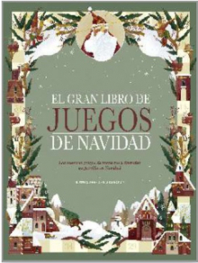
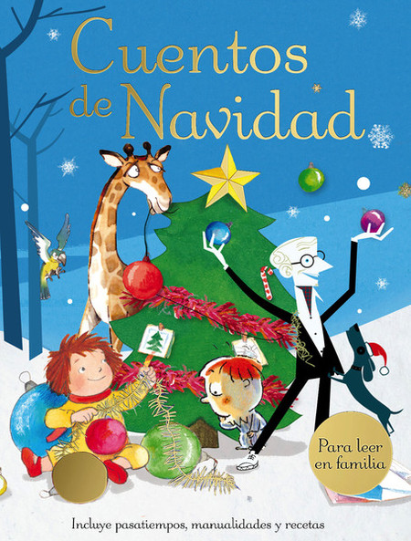
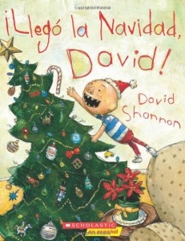
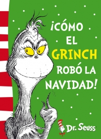
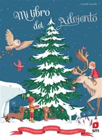

Merry Christmas!
Inicio
Multimedia
Libros
Villancicos
Noticias de Navidad
Cena de Navidad

El gran libro de juegos de Navidad

Cuentos de Navidad

¡Llegó la Navidad David!

¡Cómo el grinch robó la navidad!
Un día de Diciembre

Mi libro del Adviento